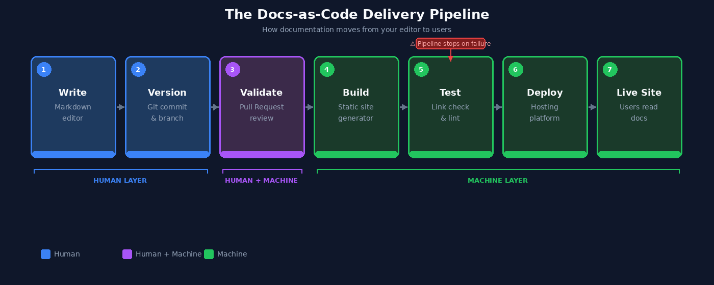

Part 5: CI/CD for Technical Writers¶
This page is part of the Git and GitHub for Technical Writers series. If you are joining mid-series, start at the Home page.
The gap between approved and visible¶
Imagine a technical writer on a distributed product team. She finishes a major update to the authentication guide, opens a Pull Request, and gets approval from two reviewers. The PR is merged. She marks the task complete.
Three days later, a developer files a bug report: the live documentation still shows the old authentication flow.
The writing was correct. The review was thorough. The merge happened. But nobody published the update to the live site. That step was manual, undocumented, and easy to forget.
This gap between approved and visible is what CI/CD pipelines are designed to close.
What CI/CD actually means for documentation¶
Continuous Integration (CI) means every change merged into the primary branch is automatically built and tested. Problems are caught immediately rather than discovered after publication.
Continuous Deployment (CD) means a successfully built and tested version is automatically delivered to the live environment. No manual publishing step is required.
Without CI/CD, documentation delivery looks like this: a writer merges approved changes, then manually runs a build command, then manually uploads output to a hosting server, then manually checks that the live site updated correctly. Each manual step is a place where something can go wrong or be skipped entirely. Automation removes those steps.
For documentation specifically, the pipeline performs three tasks after every merge:
- Build: convert source Markdown files into a fully generated documentation site
- Test: run automated checks to validate documentation quality
- Deploy: publish the generated site to the hosting environment
The sequence is the same every time. The outcome is consistent. And the writer does not have to think about it.
Who does what: a responsibility map¶
One of the clearest ways to understand a CI/CD pipeline is to look at who is responsible for each stage of the documentation lifecycle.
| Layer | Stages | Who is responsible |
|---|---|---|
| Human | Write, Version | The technical writer, creation, intent, and commit history |
| Human + Machine | Validate | Pull Request review combines human approval with automated checks |
| Machine | Build, Test, Deploy, Live Site | The CI/CD pipeline, fully automated after merge |
The boundary is the merge. Before it, humans make decisions. After it, the pipeline takes over completely. Understanding where that boundary sits helps you know what you own and what the system owns.
The Docs-as-Code delivery pipeline¶
The diagram below shows the complete lifecycle of documentation in a Docs-as-Code system, from the moment you start writing to the moment a user reads the result.

The full sequence in a single line:
Each stage is covered in detail below.
Stage 1: The merge triggers the pipeline¶
When a Pull Request is merged into the primary branch, called main in modern repositories and master in older ones, GitHub detects the change and starts the automated workflow.
The workflow is defined in a configuration file stored inside the repository:
This is a YAML file that tells GitHub Actions what to do and when to do it. In most teams, a developer or DevOps engineer creates and maintains this file. Technical writers are not expected to write it from scratch. But understanding its structure helps you read pipeline logs and collaborate more effectively when something goes wrong.
A typical trigger configuration looks like this:
Whenever a change is merged into main, this trigger fires and the pipeline begins.
Stage 2: The documentation site is built¶
Most Docs-as-Code systems use static site generators, tools that convert Markdown source files into a fully built website with HTML pages, navigation, search indexes, and static assets.
This series uses MkDocs, one of the most common choices for technical and API documentation. A build step in the pipeline looks like this:
When this runs, MkDocs reads every Markdown file in the docs/ directory and compiles them into a complete HTML site. If the build fails because a referenced file is missing, a navigation entry points to a non-existent page, or a configuration value is invalid, the pipeline stops. Nothing is deployed until the problem is resolved.
Build failures are not failures of the pipeline. They are the pipeline doing its job.
Stage 3: Automated checks run¶
Before deployment, the pipeline runs automated checks to catch problems that human reviewers can miss at scale.
| Check | What it catches |
|---|---|
| Link validation | Broken internal and external links |
| Markdown linting | Formatting and style inconsistencies |
| Spellchecking | Spelling errors across all files |
| Build integrity | Warnings that indicate structural problems |
One particularly useful option is strict mode:
The --strict flag treats warnings as errors. If any warning occurs during the build, the pipeline fails and deployment stops. This makes documentation quality enforceable at the repository level, independent of whether a reviewer happened to catch an issue during PR review.
If any check fails, the pipeline halts. The pipeline resumes only after the issue is corrected and a new commit is pushed.
Stage 4: Preview deployments¶
Many CI/CD platforms, including Netlify, Vercel, and GitHub Actions, automatically generate a temporary preview site for every Pull Request before it is merged.
Preview deployments allow writers and reviewers to see exactly how documentation will render in a browser before any change goes live. This catches problems that are invisible in raw Markdown:
- Navigation structure issues
- Image rendering failures
- Formatting inconsistencies across pages
- Layout problems at different screen sizes
Reviewing a rendered preview is more reliable than reviewing Markdown source because it replicates the actual user experience. A heading that looks fine in a text editor can break a navigation sidebar. A table that validates correctly in Markdown can overflow on mobile. The preview catches these before they reach production.
Stage 5: Staging vs production¶
Some documentation teams add an intermediate step between validation and public publication.
Rather than deploying directly to the public-facing site, the pipeline first deploys to a staging environment, a private, internal copy of the documentation that mirrors what production will look like.
Staging is most useful when documentation changes are large or structurally significant, multiple stakeholders need to review before publication, or changes must be coordinated with a specific product release date.
When internal review is complete, a second pipeline step promotes the staging version to production. No manual file transfer is involved.
Note: Not all teams use a staging environment. If you are unsure whether yours does, ask the developer or DevOps engineer who maintains the pipeline configuration file.
When the pipeline fails¶
For most technical writers, the first direct interaction with CI/CD comes when the pipeline fails. On GitHub, a failed pipeline appears as a red X next to a commit or on a Pull Request.
The failure is not a wall. It is a signal. Here is how to read it:
- Click Details next to the failed check
- Open the build logs
- Read the error message. It identifies the file and line number where the problem occurred.
- Fix the issue locally, commit the correction, and push. The pipeline runs again automatically.
Common causes of documentation pipeline failures:
| Error type | Example |
|---|---|
| Broken internal link | docs/api/authentication.md line 42: target not found |
| Missing file | image referenced in index.md not found |
| Invalid Markdown | unexpected heading level |
| Navigation config error | mkdocs.yml: page listed but file missing |
Pipeline logs are written to be read by non-engineers as well as engineers. You do not need to understand the full pipeline to resolve most failures. You need to find the error message, trace it to the source file, and fix the specific problem it identifies.
A writer who can do that is significantly more effective in a product team than one who can only write.
The complete documentation lifecycle¶
At this point, the full structure of a Docs-as-Code system is visible:
| Stage | System | Responsibility |
|---|---|---|
| Writing | Markdown | Human, creation and judgement |
| Versioning | Git | Human, intent and history |
| Validation | Pull Request | Human and Machine, review and automated checks |
| Build | CI Pipeline | Machine, compilation |
| Test | CI Pipeline | Machine, quality enforcement |
| Deploy | CD Pipeline | Machine, delivery |
| Live Site | Hosting platform | Machine, availability |
Each layer adds a specific kind of structure. Together they form a complete, auditable documentation delivery system where every change is traceable, every deployment is consistent, and nothing reaches users without passing through the same sequence of checks.
Summary¶
- Without automation, documentation delivery depends on manual steps that are easy to skip. CI/CD removes those steps.
- CI builds and tests documentation automatically after every merge. CD deploys it to the live environment without manual intervention.
- The pipeline sequence is: Merge, Build, Test, Deploy, Live Site.
- The
--strictbuild flag makes documentation quality enforceable at the pipeline level, not just at the review stage. - Preview deployments let reviewers see the rendered documentation experience before merge, catching issues invisible in raw Markdown.
- When a pipeline fails, click Details, read the log, find the file and line number, fix it, and push.
Move to Part 6: Documentation Architecture to continue.
Written by Douglas Ebhoman, a technical writer based in Prague who builds documentation systems for DevTools and SaaS companies. douglasebhoman.com · LinkedIn